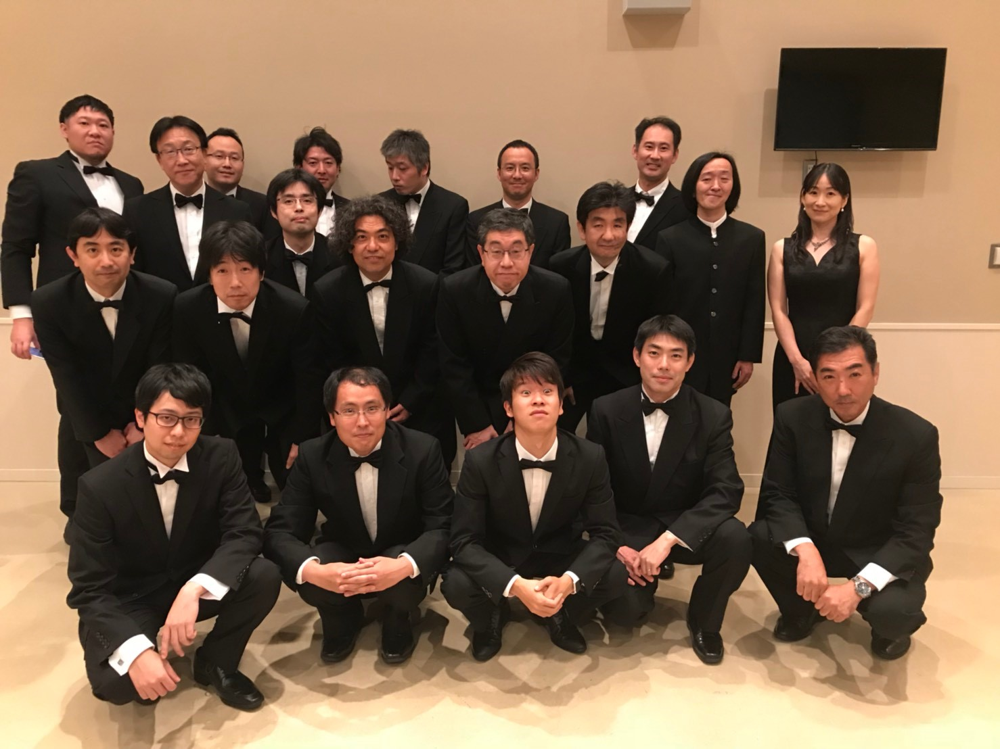

| top profile history practice info bbs link | ||
| かながわフリーダム・シンガーズ |
| 神奈川県で主に活動している男声合唱団 |
| -The most exciting Chorus in the World, maybe!- |
|  2018年5月の集合写真 |
創立30周年記念 第8回演奏会のチラシ |
| かながわフリーダム・シンガーズは、主に東京・神奈川在住の学生・社会人からなる男声合唱団です。
演奏会開催（通算７回）、コンクール出場のほか、ＣＤ録音・結婚式での祝賀演奏など、
幅広い活動を行っています。
団のモットーは「より多くの人々に合唱の楽しさを知ってもらう」こと！ |
| 2020年5月24日に創立30周年記念演奏会を開催予定です！木下牧子作曲「アンファンス・フィニ」を一緒に歌いませんか？ |
| 2019/8/18 第62回神奈川県合唱コンクールで銀賞を受賞しました！ |
| 現在練習中の曲は、 男声合唱組曲「Enfance finie（アンファンス・フィニ）」（三好達治 作詩、木下牧子 作曲） 「Wedding Qawwali」（A. R. Rahman 作詞・作曲、Ethan Sperry 編曲） 無伴奏男声合唱のための「沖縄小景」（瑞慶覧尚子 作曲） より「安里屋ユンタ」 「Missa Presque transi (Missa "Mi-mi")」より「Kyrie」（Jean de Ockeghem 曲） 男声合唱のための「カンティクム・サクルム」（千原英喜 作曲）より「アヴェ・マリア」 「O Magnum Mysterium」（Ivo ANTOGNINI 作曲） 「男の勲章」（Johnny 作詞・作曲、西條太貴 編曲） 男声合唱とピアノのための みゆき歌曼陀羅(中島みゆき 作詞・作曲、源田俊一郎 編曲) より「糸」 などです！ |
| facebook始めました！ |
| facebookアカウントお持ちの方は是非お越し下さいませ＆「いいね！」をお願いします！ |
| twitterも始めました！ |
| アカウント名はkfsingersです。 |
| youtubeも始めちゃいました！ |
| 過去の演奏曲をyoutubeで公開中です。とりあえず団歌「海へ」をどうぞ。 |
| ただいま団員募集中！ 活動予定はこちら。 お気軽にkfs.email@gmail.com までご連絡ください！ |
| ツイート Tweet to @kfsingers |
|
||||||||||||||||